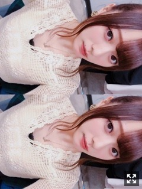
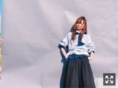
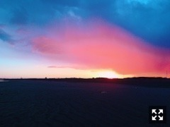
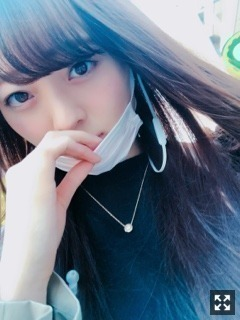

ひとりファッションショー
みなさまこんにちは！！
乃木坂46 ３期生の
梅澤美波です！！

ポニーテール！
珍しく早い時間に更新∠( ˙-˙ )／
今日はサクラの入浴剤◎
匂いに癒されてます〜
(昨晩です☺︎
そういえばね、
バレンタインの翌日にお仕事が一緒だった
まなつさんにバレンタインのクッキーを
頂いたんです(；；)♡♡
本当に美味しかったなあ〜(；；)
とっても嬉しかった(；；)
そしてね、嬉しいことに
最近若月さんとご一緒することが多かったの！
ある約束したんだ〜∠( ˙-˙ )／にや
たくさんおしゃべりするの☺︎
二人でのお仕事もあったよ☺︎
いつも優しくてかっこいい若様です( .. )
ついつい頼ってしまいます( .. )

前に桃子と二人でグラビア撮っていただいた
OVERTUREさんのオフショットです！
カッコつけてる✌︎（笑）
このショット外で撮っててね、
私寄っかかってるのですが、
グレーバッグの後ろに
スタッフさんが支えてくださってるの( .. )
いつも撮影は
色々なスタッフさんの支えがあって
楽しく撮影させていただいてるんだ〜☺︎
指輪可愛いの見せたくって
謎すぎるポーズ（笑）
今まで載せていただいてきた雑誌の
オフショットも載せきれてない分が大量なので
少しずつ載せていくね☺︎
質問を下書きに書いていたので載せます◎！
質問コーナー◎
(多めです)
Q.焼肉で一番に頼むのは？
A.牛タン！
Q.カラオケで男性に歌って欲しい曲は？
A.宇多田ヒカルさんの｢First Love｣が不動の第１位だけど、最近は清水翔太さんの｢君が暮らす街｣、back numberさんの｢fish｣も素敵だな〜って思います！ただ私が好きな曲なだけたけど( .. )（笑）
Q.カラオケで何歌うの？
A.カラオケは結構幅広く色々歌います！その時の気分で！しっとりめの曲が多いかな〜
Q.朝しっかり起きれる方法教えてください！
A.気合いのみ！寝る前に何時に起きるっていうのを強く自分に念じます！私は乃木坂に入ってから朝が苦手じゃなくなったかな〜！早起き頑張って下さい☺︎
Q.健康意識して食べてるものはある？
A.特にないです！ただただ好きなものを美味しく食べれれば幸せです！食べることが一番の幸せなので、食にストレス感じたらたぶん私やってけない( .. )（笑）もちろん野菜とかは摂りますがとくにそこまで意識しません！好きな物好きなだけ食べたい主義∠( ˙-˙ )／
Q.欅さんの曲でなにがすき？
A.｢キミガイナイ｣がすきです！ひらがなさんだと「沈黙した恋人よ」がすき！この間MVが公開された「もう森へ帰ろうか？」も好き！土生さん可愛いしこばゆいさんも可愛いし目の保養です( .. )
Q.寝る時は仰向け？横向き？うつ伏せ？
A.基本右向き〜！顔の周りに手がないと落ち着かない人！
以上です〜！
また質問募集するね◎

綺麗すぎる空をおすそわけ。☺︎
加工してるみたいでしょ、
絵の具で書いた空みたいでしょ！
本当に癒されますなあ
先日ファンレターを受け取りました☺︎
受け取れるのが遅くなってしまうけど
全て読ませて頂いています。
私には勿体無いくらいの
素敵な言葉がたくさん綴ってあって
心が暖かくなります。
いつもありがとう！
幸せものです☺︎
あまりないから
今度会った時いっぱい撮ってきます！
いつも一緒にいると
つい撮るの忘れるんだ〜( .. )
待っててください◎！
さあ今日も私は
行ってまいります！
私の頑張るところ！
頑張ってきます！
みんなもがんばってね☺︎

ストレート！
相変わらずの全身真っ黒です◎（笑）
なにかあったときでも
私を見て元気でるって思えるような
そんな存在になれるように頑張るね！
Original：https://www.nogizaka46.com/s/n46/diary/detail/43451?ima=4955&cd=MEMBER